Level 75 reference · Zenith rules
Why Dark Knight?

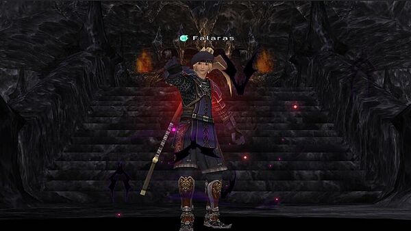
When you imagine a 2007 era Dark Knight, it may evoke images of Linkin Park playing in the background while Kraken Clubs are swingin and beating down an innocent Absolute Virtue. It could also evoke memories of that one Dark Knight you partied with that just couldn’t control his Souleater usage and constantly killed himself. Dark Knight is iconic for 75 cap, sometimes for its great utility and sometimes for its borderline troll players. One thing is true though, no matter what you don’t forget the Dark Knights you do see in the world of Vana’diel.
On Eden, Dark Knight finds a home as a heavy DPS job that brings moderate amounts of support to the party with things like stun and enhancing the effect of chaos roll. It can also be played as a tank at end game levels, relying on spells to generate aggro and mitigating damage with dread spikes, drains, and utsusemi. In a pinch Dark Knight can even be a backline job, using absorbs, drains, aspirs, and stuns to do moderate amounts of damage and utility against mobs that don’t particularly take physical damage. Flexibility is the key to Dark Knight’s usefulness, in general the job struggles to keep up with the best DD jobs like Samurai or Warrior, but people still love to have them around just for the mixture of support and damage. This also means that compared to my previous guides, Warrior and Samurai, there is much less black and white to Dark Knight's play style. This job is a "learn by doing" job for sure, you yourself need to figure out how to fit in a dread spikes between pulls without losing any DPS uptime, or when is appropriate to stun vs just allow things to go off so you can squeeze out more damage. No one likes a Dark Knight that sacrifices all damage in order to support, but no one likes a Dark Knight that never supports either, balance is the key to this job.
Abilities
Blood Weapon (1) 2:00:00 Recast - When activated Blood Weapon drains HP equal to amount of damage done to the enemy for every swing connected.
This is a strange 2-hour ability to be honest, it's pretty weak for normal play just allowing you some cheeky healing every time you hit that is very unlikely to save you from death. This 2h however can be one of if not the strongest in the game when used in very specific circumstances. With Souleater up you would usually lose 12% of your HP with every auto attack, but when paired with Blood Weapon you will heal all of that HP back making it do no damage to you (this does not work on WSes). With fast swinging weapons, many buffs, and against specific mobs, a Dark Knight can achieve unimaginable burst damage with this ability combination in what is commonly called a "zerg". This strategy is used to take down very scary end game monsters in 30 seconds flat like Vrtra, Bahamut, and Dynamis Lord. See the Zerging section for more information on this playstyle.
Arcane Circle (5) 10:00 Recast - Increases resistance to arcana
A pretty weak ability, if you remember to use it while fighting any arcana-type mob you and your party members will have a chance to intimidate the mob.
Last Resort (15) 5:00 Recast - Increases your attack by 15% and lowers your defense by 15%
This ability is okay, it's a relatively strong temporary attack boost you can slip in before a big WS. Usually you will want to use this on cooldown just for more stats. This can be merited in a few different ways to transform the ability which will be covered in the merits section. It also gives a huge amount of hate - 1300 Volatile Enmity which is about 2/3rds of a Provoke.
Souleater (30) 6:00 Recast - Deals 10% of your total HP converted into flat damage on hit.
This is probably the Dark Knight "signature" ability, it allows you to add massive amounts of damage to every swing at the cost of your own HP. Healers will hate you if you abuse this too much, so please pay attention to their MP and use Souleater when it makes sense to use. With weaponskills this will trigger on every hit of a WS, so if you use a 6 hit WS you will drain 60% of your entire HP pool, so be careful. As mentioned in the Blood Weapon paragraph, this can be combined with that ability for some crazy shit. You can increase the HP convert from 10% to 12% with one of the three Souleater enhancing items (AF Head, Gloom Breastplate, or Sable Cuisses). Souleater also adds +25 accuracy while its up, which can help offset accuracy loss from Souleater enhancing items.
Spells
Drain (10): Dark magic spell that drains HP from the enemy, this is actually a pretty strong nuke and you will use this a lot. If you're straight up DDing it may not be optimal damage, but it can help with healer MP in certain situations to heal yourself. Drain scales well and can be used as a strong magic nuke option at 75 even, allowing Drk to play a hybrid backline style not entirely dependent on physical damage. This spells damage scales with Dark Magic Skill up until a cap of 300 and then stops, after that just gear for magic accuracy via INT, skill, and raw magic accuracy items.
Bind (20) & Sleep (30): If you have Enfeebling skilled up this can be useful to cast in weird situations, like a mob link or over pull.
Stun (37): Probably the most useful spell that Drk has, it has a .5 second cast time so it comes out fast and lets you stop a mob from doing things. This is the #1 utility ability that Drk has access to, you can stun giant -aga spells, pecking flurries, lock a mob down so it doesn't Mijin Gakure or Astral Flow, or just stun to let someone get shadows up. This is such a strong spell and learning to use it correctly is integral to being a useful Dark Knight. This spell also generates very high amounts of Enmity and can be used as a way to get snap hate.
Absorb-STR (Or any stat) (31-43): These are very situational spells that allow you to steal a mob's stats and apply them to yourself. I would not take the time to cast these spells instead of hitting the mob, the extra STR or DEX generated is not even close to worth the casting time wasted. The true use for these spells is on things you can't melee, you can enfeeble a really powerful enemies INT so your Blms can have more accurate nukes, or VIT so your Rngs can hit harder, and so on. Support basically.
Absorb-TP (45): This is a a fun spell, it allows you to steal TP from the enemy and give it to yourself. This spell has a high level of skill expression, as the more TP the mob has the more TP you can take from it, so if you learn to read battle pacing and mob TP generation you can get some really nice Absorb TPs off. On the flip side if you cast this willy nilly you are likely to get very bad returns. In actuality you are better off not casting this spell in most situations because the damage gained from just hitting the mob and generating TP the old fashioned way is just straight up better damage, but in some situations it is worth using.
Drain II (62): Drain II acts like drain, but with a twist! For every HP drain II returns over your max HP, it will temporarily increase your max HP for 1 minute. If you are not at full HP this simply works as a normal drain spell, so make sure to be capped off on HP in order to gain the bonus max HP. This is exceptionally useful for boosting the damage of Souleater, in party play you could Drain II the mob before popping souleater for extra bonus HP% damage. It also has a higher damage cap than drain, so you can hit for 400+ damage in max sets. This may go above 300 Dark Skill unlike Drain, but the info is fuzzy.
Dread Spikes (71): The coolest and most fun "spikes" ability in FFXI, Dread Spikes once cast causes you to drain HP from the enemy every time you're hit equal to the damage the mob does to you. Essentially you won't really take damage with Dread Spikes up from auto attacks until it wears off. The potency of Dread Spikes is based purely on total HP, which means you can macro in as much HP as possible before casting it for maximum total damage absorbed. The spell only lasts 1 minute, so it can be frustrating to use, but when timed correctly is exceptionally rewarding.
Merits

Category 1
I should preface this by saying that category 1 is a mess of a category, and is still highly debated by Dark Knights in discord channels and forums everywhere. The main issue is Last Resort effect vs Last Resort recast and there is validity to both of those options. Even Souleater recast can be situational. Follow your heart and merit what works best for you in category 1 because lord knows there's no right answer.
Souleater Recast - Lowers the recast of Souleater by a minute, putting it at 5:00 with full merits. I personally think this is a good choice for a category 1 merit, allowing you to get to your next big souleater WS a minute earlier, or if your lucky enough with enough backline you can ride the whole souleater duration. That said if you find yourself unable to use souleater on cooldown because of MP constraints, maybe it's not the right merit for you.
Last Resort Recast - This lowers Last Resort's recast down to 4:10 with max merits, which sounds great, more Last Resort who could be mad at that. The problem is that if you are stacking Last Resort and Souleater togethor, this staggers the timers and can lead to waste. Is it better to use them seperately and take the lower recast? Maybe. It depends on the situation, the healer's ability to support the Souleater usage, and many other things.
Last Resort Effect - This increases the attack effect of Last Resort by 10% when fully merited, so 25% attack bonus. This is good, but you also have to remember that attack does cap at some point, and in many situations the +15% attack alone on Last Resort is enough to hit that point. This is good sometimes, and literally useless sometimes, and deciding between this and Last Resort Recast is a challenge all Dark Knight's face.
Arcane Circle Recast/Weapon Bash Recast - Worthless.
Category 2
Dark Seal - Pretty good one point wonder, this works much like Elemental Seal where it gives you massive magic accuracy bonuses when casting 1 dark magic spell. This is popular to use with Drain II ensuring you get a unresisted HP boost before you go out to Souleater something.
Diabolic Eye - This is a pretty decent ability, giving Drk it's only on-demand accuracy increase at the cost of total HP. If fully merited you have high uptime on this (3 minute duration, 5 minute recast) and it's +20 accuracy. This can be used either as an on-demand accuracy boost against mobs with higher evasion (Like a Thief mob in Dynamis) or you can swap out accuracy gear for more offensive options when its up (Like Toreadors Ring into Blitz Ring) either way is good. Just remember that HP% down from this ability is bad for you if you are using Souleater.
Muted Soul - This merit gives you -10 enmity when Souleater is up per level. I don't recommend this, as when you are using Souleater your damage output should be so insanely high that you will likely pull hate anyways. Also most of the time Souleater is either deleting the mob or the mob is unable to act when being attacked via stuns so it doesn't matter if it's facing you.
Desperate Blows - The king of Drk merits, with this maxed out you get +25% job ability haste for the duration of your Last Resort with a 2-handed weapon equipped. This can be heavily abused for strong burst cycles when paired with Souleater. It's hard to overstate just how important this merit is, and it should always be your first capped job merit. One cool thing most people don't know about this ability is that with 5/5 you don't need to use Hasso while it's up (because job ability haste caps at 25%) so you can use Seigan+Third Eye for defense.
Recommended: 5 Desperate Blows, 1 Dark Seal, 4 Diabolic Eye.
People typically ask for a recommended meriting order so I try to add one into these, personally I think its super subjective as your needs vary based on what you do, but here's my take:
Desperate Blows 5 > Scythe Skill 8 > Critical Hit 4 > Dark Seal 1 > Diabolic Eye 4 > Souleater Recast 5 > Last Resort Effect 5 > HP 8 > STR 5
Sub Jobs
Core Sub Jobs:

Samurai is Drk's highest DPS sub job for normal play as a melee DPS. The biggest reason for this is the ability Hasso, which is a 100% uptime +10% Haste, +10 Accuracy, and +5 Strength. Haste is by far the most important stat in the game, especially if you are stacking it on top of other haste gear and buffs, so the DPS increase from +10% alone is absurd. The second reason is the passive Store TP you gain off traits, which allows a scythe Drk to gain TP in 6 hits instead of 7, and a great sword Drk to gain TP in 7 hits instead of 8. Samurai sub also offers defensively utility in Seigan, which allows you to mitigate most incoming single target attacks. Other perks include Meditate which grants you free TP and Zanshin which offers a low chance to swing again if you miss. The only "problem" with Samurai sub is that with Hasso or Seigan up you cast 100% slower, but it's easy enough to cancel them before you start a cast. This is the sub you want to have, it may not always be the right choice because Ninja sub offers significantly stronger defenses, but if you can you should sub Samurai.

Ninja is the other major sub for Drk, it offers basically zero offensive power but has unmatched defensive ability that in 75 cap play is exceptionally necessary at times. This power comes from the spell Utsusemi, both versions of it, which puts a buff on you that absorbs incoming damage. When played correctly you should take almost no damage when subbing Ninja as you can rotate between Utsusemi: Ni and Utsusemi: Ichi for nearly fulltime coverage. The only thing you have to worry about is AoE magic, which will instantly clear your Utsusemi and do full damage, and some AoE weaponskills which can pierce shadows or clear certain amounts of them. This is also the sub job you will use for any tanking.
Niche Sub Jobs:

Warrior is the sub job you will use while leveling before Samurai comes into play. Seeing as you don't get hasso till 50, War is your go to sub from 30-49 if you don't need Ninja for defenses. At 30 you will gain access to Berserk which is a +25% attack buff with a 3 minute duration and 5 minute recast.

Ranger is the sub job of choice before Warrior! From 20-30 this sub will offer you a small Accuracy Bonus (+10) as well as Sharpshot that increases your ranged accuracy for spamming crossbow bolts which you should be doing at that level.

Dragoon is purely a zerging sub job, it does offer some non zerging benefits like Jump, Attack Bonus, and Accuracy Bonus, but overall none of those will be better than the subs listed above. Where Dragoon shines is Wyvern Earring, which is a +5% haste earring that can only be active when subbing Drg. This is the best sub job for all levels of zerging because the haste only gets better the more you have, and in zerg situations you are at very high haste levels to begin with.

Thief is not a good sub job in my opinion, and I put it here purely to talk about why you shouldn't use this. Many people remember using Thf as a sub in era in order to drop giant single hit WSes like Spinning Slash with Sneak Attack forcing the WS to critical hit. This playstyle has almost entirely vanished on Eden, as with proper gearing and buffing, even on the hardest mobs you will likely have buffs and be able to just sub Sam or Nin to melee the mob down, which results in far more damage than the spike of SAWS. Maybe your LS will have some use for this sub, but I've been playing on Eden for a long time now and have used this playstyle almost never.
Leveling Tips
Dark Knight is a strange job while leveling, Scythe, the signature weapon, is actually really bad until level 60 and even casting spells is largely a waste of time. Dark Knight while leveling is going to use a combination of Great Axe and a Crossbow. The Great Axe gives you access to strong weaponskills; Shield Break, as the first WS you learn, applies -40 evasion to the mob when used (not guaranteed, and based on combat skill level so keep it skilled up) which is one of the largest DPS increases you can possibly have for a party at low levels. Later on Sturmwind is a very powerful 2-hit WS and can really put the hurt on mobs; also because it's multi-hit it synergizes very well with Souleater. Crossbow is exceptionally powerful at lower levels, if you have the proper crossbow and gear you should be able to hit harder and faster than your 2 hander by shooting bolts. Dark Knight has a very low Marksmanship skill (E), but honestly skill levels don't matter too much until the 50s or 60s.
Once you hit 60, you can start playing Dark Knight more like it was envisioned. With a Scythe out you have access to Guillotine, one of the strongest weaponskills in the game. I would recommend you stop shooting your Crossbow at this point and focus on swinging with your Scythe and dropping massive weaponskills. You can also cast spells like Absorb-TP, which if timed well can give you huge chunks of TP to increase your damage and lower the mob's damage. Don't forget you can Stun/Weapon Bash pesky moves like Pecking Flurry or Cocoon. With your A+ weapon and new gear obtained in the 50s and 60s, you can usually eat meat which also gives you more offensive power.
Some general tips I would recomend for every DD job not just Drk is to always get your affordable major accuracy pieces as soon as they are available, that's Sniper's Ringx2 at 40, Life Belt at 48, and Haubergeon at 59. Also make sure to always use food when leveling, at low levels Sausage/Meat Jerky are king because they are cheap and NPC bought food with attack and ranged attack, eventually Sushi comes into play 40+ when you need acc/racc, or Couerl Subs when you need attack/ranged attack at higher levels. If you want to know more about food, I'd recommend reading the Food Guide that Falzuma and I put together, and please always use food even against Colibri. . Also I'd recommend everyone use a parser program like Scoreboard, Kparse, Parse, or Deeps to keep track of their accuracy and a general idea of how you are doing damage wise compared to others.
Weapons

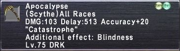
Apocalypse - The king of Dark Knight weapons, this is the relic scythe and is probably the single biggest power increase a relic weapon can provide to a job. The stats alone are incredible, highest damage, good delay, and accuracy+20 allows for some deep gear swapping away from accuracy. Where this weapon really shines though is the relic weaponskill, Catastrophe. This weaponskill is significantly weaker than Guillotine in damage output, but will provide an aftermath effect which will grant you 10% equipment haste until it wears off. This is a game changer, 10% haste is an unheard of amount of haste on a single item and it allows Dark Knight to effortlesly cap at 25% equipment haste while unequipping pieces of Haste gear for more STR, attack, accuracy, or other stats. Oh and I didn't even mention that Catastrophe heals you for a percent of damage done which makes you very hard to kill with this weapon and allows for some very aggressive Souleatering. Dark Knight is not even one of the most popular jobs on Eden, but Apocalypse is the second most popular relic on the server, and for very good reason.

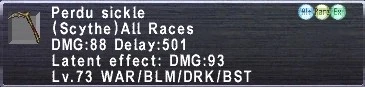
Perdu Sickle - This is the new best pre-relic Scythe on Eden, although the difference between Perdu Sickle and Triton's Scythe is very small. In my spreadsheet I was getting around a 2 DPS swing going from Tritons -> Perdu in the best case scenarios, and in many scenarios it was a complete wash. It has a faster swing speed, which is where it gains the majority of its DPS, Dark Knight has no issues with 6 hitting in general so it doesn't change gear at all. It also has an Attack+14 Accuracy+5 hidden effect, nice for any non-relic weapon job as you can get closer to accuracy capping or swap out an accuracy item like Abyss Cape.

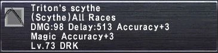
Triton's/Orichalcum Scythe - This is the staple Scythe for all Dark Knights on Eden. The NQ is super affordable, and the HQ is a little pricy but is not impossibly expensive. This scythe is competitive with Perdu Sickle, but in general a very small amount worse. The upside is that it is buyable and doesn't require the high mercenary rank and imperial standing of Perdu. Orichalcum Scythe is a significant step down but it quite a good starter scythe.

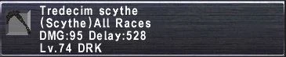
Tredecim Scythe - This scythe is bad.....currently. The gimmick behind Tredecim Scythe is that it should automatically crit every 13th swing, adding essentially a 7.69% crit rate ontop of the weapon. When this works, the scythe will be good. On Eden currently, this effect is not coded so I would not recommend anyone buy or even look at this weapon.

Ragnarok - The other relic weapon that Dark Knight get's access to, and man is it disappointing. In theory this weapon has a lot going for it with tons of passives like an increased Critical Hit Rate, an aftermath that also gives Critical Hit Rate, fast swing speed, bonus accuracy, all sorts of things. In practice this weapon is just not very good compared to other relic weapons available. The damage is abysmal and the exclusive WS Scourge is legitimately one of the worst weaponskills ever made with its CHR/MND mod. Ragnarok suffers from not having a good WS, which is why in later versions of FFXI where it was given a good WS, this relic became the best. In theory this puts out good white damage, but white damage alone doesn't make up for the huge lack of WS damage you will have with this weapon.
Gear Sets
| TP https://www.ffxiah.com/item-sets/382803 | |||||||||||||||||||||||||||||||||||||||||||||||||||||||||||||||||||||||||||||||||||||
|---|---|---|---|---|---|---|---|---|---|---|---|---|---|---|---|---|---|---|---|---|---|---|---|---|---|---|---|---|---|---|---|---|---|---|---|---|---|---|---|---|---|---|---|---|---|---|---|---|---|---|---|---|---|---|---|---|---|---|---|---|---|---|---|---|---|---|---|---|---|---|---|---|---|---|---|---|---|---|---|---|---|---|---|---|---|
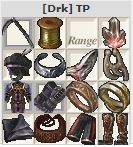 |
Stat Priorities: Store TP (Until 6 hit) > Haste (Until 25%) > Accuracy (Until Capped) > Attack > Strength.
407 Accuracy (Max Merits, Hume DEX, Hasso). There's some strong options in this set to raise or lower accuracy based on your event. If you need more accuracy you can always swap to Aces Helm, Toreador's Ring, or Homam Hands. If you need less accuracy you can swap to Bomb Core, Cerb Mantle+1, or Dusk Ledelsens +1. I always recommend having something like 2-3 TP sets that vary in accuracy, I bracket mine at 390-400-410 accuracy. | ||||||||||||||||||||||||||||||||||||||||||||||||||||||||||||||||||||||||||||||||||||
| |||||||||||||||||||||||||||||||||||||||||||||||||||||||||||||||||||||||||||||||||||||

| Guillotine https://www.ffxiah.com/item-sets/382804 | |||||||||||||||||||||||||||||||||||||||||||||||||||||||||||||||||||||||||||||||||||||
|---|---|---|---|---|---|---|---|---|---|---|---|---|---|---|---|---|---|---|---|---|---|---|---|---|---|---|---|---|---|---|---|---|---|---|---|---|---|---|---|---|---|---|---|---|---|---|---|---|---|---|---|---|---|---|---|---|---|---|---|---|---|---|---|---|---|---|---|---|---|---|---|---|---|---|---|---|---|---|---|---|---|---|---|---|---|
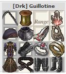 |
Stat Priorities: Accuracy (Until Capped) > STR > Attack/MND.
410 Accuracy (Max Merits, Hume DEX, Hasso) which might be too much or not enough for your accuracy needs. It's very easy to gain or shed accuracy in this set, throwing on more Hecatomb+1 items over Onyx items for example is a substantial DEX and thus accuracy swing for very little damage loss. Guillotine has a 25% MND modifier, which makes some MND items appealing. The main thing is going to be Flame Ring with its -2 MND is bad compared to Triumph Ring, also AF+1 feet are surprisingly good. | ||||||||||||||||||||||||||||||||||||||||||||||||||||||||||||||||||||||||||||||||||||
| |||||||||||||||||||||||||||||||||||||||||||||||||||||||||||||||||||||||||||||||||||||

| Physical Damage Taken https://www.ffxiah.com/item-sets/382695 | |||||||||||||||||||
|---|---|---|---|---|---|---|---|---|---|---|---|---|---|---|---|---|---|---|---|
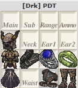 |
Stat Priorities: Damage Taken > Physical Damage Taken > Parry > Evasion > HP
These kind of sets always have some self expression, you can go as defensive as you want, slotting in Parrying or Evasion or HP into the empty slots to try to boost survivability even more. The set I chose to show is just equipping items that have -% damage taken on them, as I think keeping offensive stats in the other slots just makes more sense. With Valhalla gear out you also have to make a decision about Slow on pieces, using Slow doesn't matter if the equip is only coming on to sponge an Eagle Eye Shot or something, but if you plan to actually sit in the set for a little bit you may not want to use those pieces. | ||||||||||||||||||
| |||||||||||||||||||

| Magic Damage Taken https://www.ffxiah.com/item-sets/382344 | |||||||||||||||||||||||||||||||||||||||||||||||||||
|---|---|---|---|---|---|---|---|---|---|---|---|---|---|---|---|---|---|---|---|---|---|---|---|---|---|---|---|---|---|---|---|---|---|---|---|---|---|---|---|---|---|---|---|---|---|---|---|---|---|---|---|
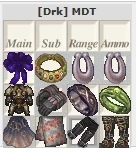 |
Stat Priorities: Damage Taken -% > Magic Damage Taken -% > 1 or more in every Elemental Resist > Magic Defense Bonus.
MDT caps at -50% damage taken, with Shellra V you only need 23%, with Shell IV you need 28%, making it very possible to cap MDT on Drk. Once you have capped MDT you can look to slot in items with Magic Defense or Shadow Ring which nullifies magic damage rarely. Elemental Resist is something usually not valuable unless you have a lot of it, but modern research has shown us that if you have negative or neutral elemental resists, you actually lose the ability to 1/8th or 1/16th resist a spell. To fix this we like to have at least 1 in every resist, using a Ribbon and Jeweled Collar to achieve that. | ||||||||||||||||||||||||||||||||||||||||||||||||||
| |||||||||||||||||||||||||||||||||||||||||||||||||||

| Drain/Drain 2 - https://www.ffxiah.com/item-sets/382854 | |||||||||||||||||||||||||||||||||||||||||||||||||||||||||||||||||||||||||||||||||||||
|---|---|---|---|---|---|---|---|---|---|---|---|---|---|---|---|---|---|---|---|---|---|---|---|---|---|---|---|---|---|---|---|---|---|---|---|---|---|---|---|---|---|---|---|---|---|---|---|---|---|---|---|---|---|---|---|---|---|---|---|---|---|---|---|---|---|---|---|---|---|---|---|---|---|---|---|---|---|---|---|---|---|---|---|---|---|
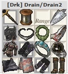 |
Stat Priorities: Dark Magic Skill (Till 300) > INT or Dark Magic Skill or Magic Accuracy depending on which gives high total magic accuracy.
The most important thing is hitting 300 skill, which will cap the damage of your Drains, anything past 300 skill is only going to add magic accuracy. INT gives 1 magic accuracy for every 2 INT, Dark Skill gives 1 magic accuracy for every 1 skill. Evaluate pieces based on how much total magic accuracy they give. There also is some validity to using haste gear in this set to lower recast timers if you don't need the magic accuracy. | ||||||||||||||||||||||||||||||||||||||||||||||||||||||||||||||||||||||||||||||||||||
| |||||||||||||||||||||||||||||||||||||||||||||||||||||||||||||||||||||||||||||||||||||

| Dread Spikes https://www.ffxiah.com/item-sets/382860 | |||||||||||||||||||||||||||||||||||||||||||||||||||||||||||||||||||||||||
|---|---|---|---|---|---|---|---|---|---|---|---|---|---|---|---|---|---|---|---|---|---|---|---|---|---|---|---|---|---|---|---|---|---|---|---|---|---|---|---|---|---|---|---|---|---|---|---|---|---|---|---|---|---|---|---|---|---|---|---|---|---|---|---|---|---|---|---|---|---|---|---|---|---|
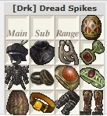 |
Stat Priorities: HP > Haste
Dread Spikes is based on your total HP at the time of casting, so macroing in a ton of HP means you get a stronger Dread Spikes. If you want to lower the recast, using some haste items is not a bad idea either. | ||||||||||||||||||||||||||||||||||||||||||||||||||||||||||||||||||||||||
| |||||||||||||||||||||||||||||||||||||||||||||||||||||||||||||||||||||||||

Zerging
| Zerging https://www.ffxiah.com/item-sets/396064 | |||||||||||||||||||||||||||||||||||||||||||||||||||||||||||||||||||||||||||||||||||||
|---|---|---|---|---|---|---|---|---|---|---|---|---|---|---|---|---|---|---|---|---|---|---|---|---|---|---|---|---|---|---|---|---|---|---|---|---|---|---|---|---|---|---|---|---|---|---|---|---|---|---|---|---|---|---|---|---|---|---|---|---|---|---|---|---|---|---|---|---|---|---|---|---|---|---|---|---|---|---|---|---|---|---|---|---|---|
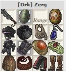 |
Stat Priorities: Haste > HP > Accuracy.
The general idea behind zerging is to leverage Souleater+Blood Weapon to add massive unresistable damage to fast swinging weapons that you wouldn't usually get much use out of. A zerg usually involves a litany of buffs to your Haste, Accuracy, and Attack to turn your character into a destructive force for about a minute. In general for zerging you want to use a Kraken Club, but you can also get away with a Mercurial Kris or a Ridill if you need to have a zerging weapon but can't afford a Kraken Club. | ||||||||||||||||||||||||||||||||||||||||||||||||||||||||||||||||||||||||||||||||||||
| |||||||||||||||||||||||||||||||||||||||||||||||||||||||||||||||||||||||||||||||||||||

Misc. Items

|
Best in slot ring for TP sets in Salvage and Assaults. Can be fit into an Ashitacast or Gearswap to detect if you are in those zones. |
|---|---|

|
A very good Weaponskill earring at night, with double the amount of STR as a Triumph/Bushinomimi. |

|
This is a straight upgrade over Merman's Earring in the daytime. |

|
This item applies a Poison effect to you when equipped and you have your weapon drawn, very useful for waking up from being slept in Dynamis or Merit Parties. Once you have it you will wonder how you played without it. |
| Souleater Items | When using Souleater these are tremendously powerful. The Head and Body both have BIS uses, the Legs are more stopgappy. |
| Refresh Items | When you are standing around it's a good idea to have Refresh items equipped in order to passively gain MP. |
| Regen Items | When you are standing around it's a good idea to have Regen items equipped in order to passively gain HP. |
| Medicines | A sign of a great player is an inventory full of medicines. The linked list includes every medicine I think a Samurai should carry with them at all times, they save runs and you never know when you are going to need them. |
Looking Forward
Eden is looking pretty feature complete these days, the things we know are coming down the pipeline still are higher tier Assaults and Mythics. Assaults will open up Perdu Sickle, this item was considered BIS and beloved in era, but in reality may not be that good on Eden, we shall see. Liberator has a chance to be a pretty cool weapon for certain scenarios, but like all mythic melee weapons has some real problems with aftermath uptime.
Hit me up on Eden if you have any questions about the guide!
Adapted from Eden Wiki: Dark Knight Guide by Falaras · Contributors and history · CC BY-SA 4.0. Revision 46958. Layout, links and optional background text adapted for Zenith.